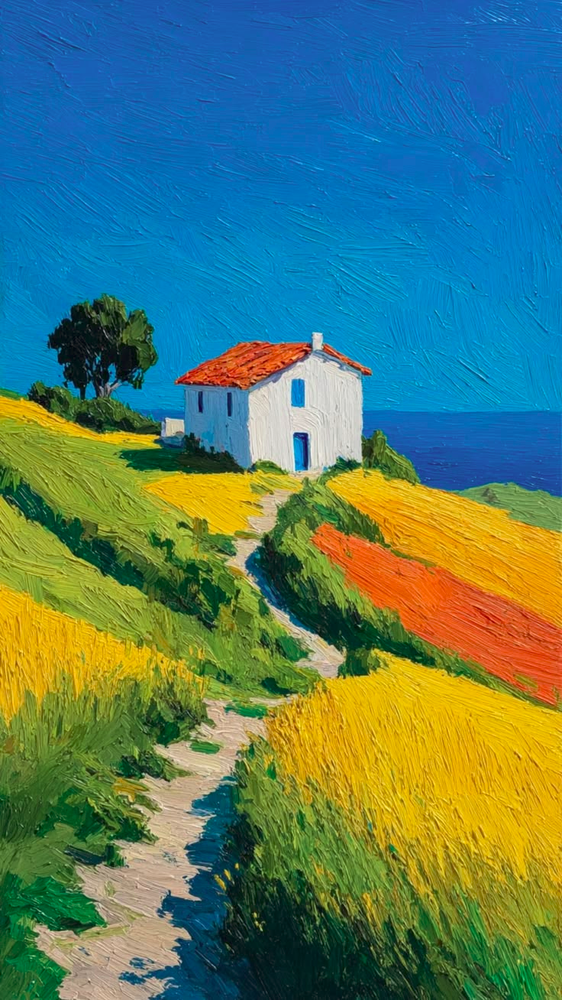

🌸 🌷 🌸
Hola,
Camila
Cada vez que estés triste, molesta o simplemente abrumada…
este lugar es solo para ti.



Cada vez que estés triste, molesta o simplemente abrumada…
este lugar es solo para ti.
Sin juicios, este es tu lugar seguro 💜
…